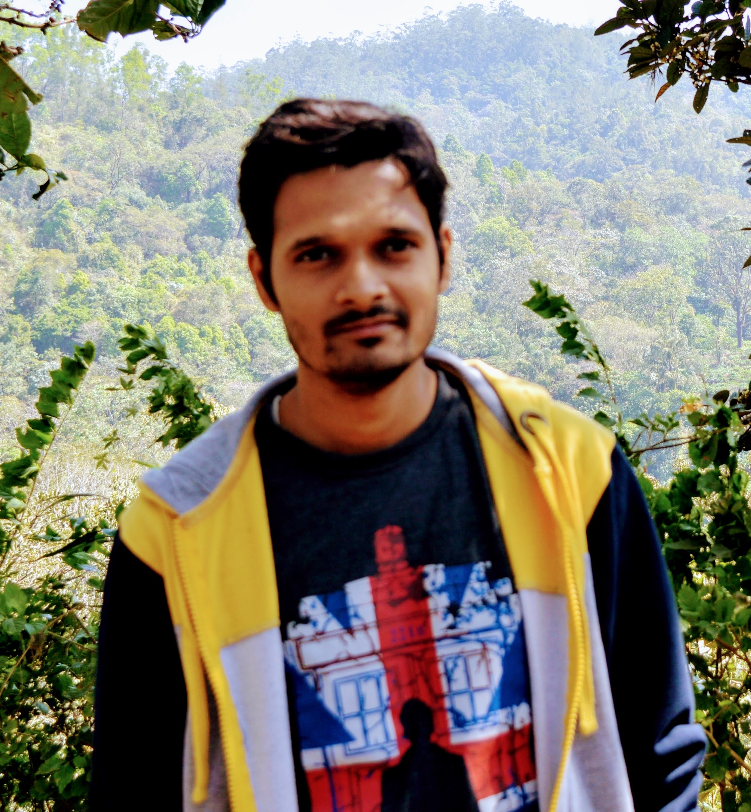

PhD student
University of Edinburgh
Interested in Machine Learning and Natural Language Processing
Email: parag [dot] jain
[at] ed [dot] ac [dot] uk
Laha, A.*, Jain, P.*, Mishra, A.*, Sankaranarayanan, K.
Scalable Micro-planned Generation of Discourse from Structured Data - Computational Linguistics Journal 2019
Jain, P., Mishra, A., Azad, A.P. and Sankaranarayanan, K.
Unsupervised Controllable Text Formalization AAAI 2019
Surya, S., Mishra, A., Laha, A., Jain, P., Sankaranarayanan, K.
Unsupervised Neural Text Simplification - ACL 2019
Agrawal, P., Jain, P., Dalmiya, A., Mittal, A.
Unified Semantic Parsing with Weak Supervision ACL 2019
Jain, P., Laha, A., Sankaranarayanan, K., Nema, P., Khapra, M.M. and Shetty, S.,
A Mixed Hierarchical Attention based Encoder-Decoder Approach for Standard Table Summarization NAACL-HLT 2018, Short
Nema, P.*, Jain, P.*, Shetty, S., Laha, A., Sankaranarayanan, K. and Khapra, M.M.,
Generating Descriptions from Structured Data Using a Bifocal Attention Mechanism and Gated Orthogonalization NAACL-HLT 2018
Jain, P., Agrawal, P., Mishra, A., Sukhwani, M., Laha, A. and Sankaranarayanan, K.,
Story Generation from Sequence of Independent Short Descriptions SIGKDD Workshop ML4Creativity, 2017
Bharadwaj, S. et al. [and others, including Jain, P.] Creation and Interaction with Large-scale Domain-Specific Knowledge Bases VLDB 2017, Demonstrations Track [Video]
Jain, P., Balasubramanian, V.N.
Online Active Metric Learning for Clustering XRCI OPEN 2016
Twig: Twig is a template-based natural language generation library. Template specification is based on Handlebars specification format, which is a superset Mustache templates. Simple slot based template definition.
Structured Data To Descriptions: Code and dataset for NAACL 2018 paper on Generating Descriptions from Structured Data Using a Bifocal Attention Mechanism and Gated Orthogonalization
Thanks to Vasilios Mavroudis for the template.!